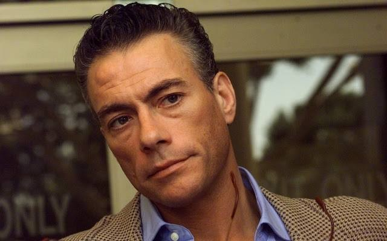
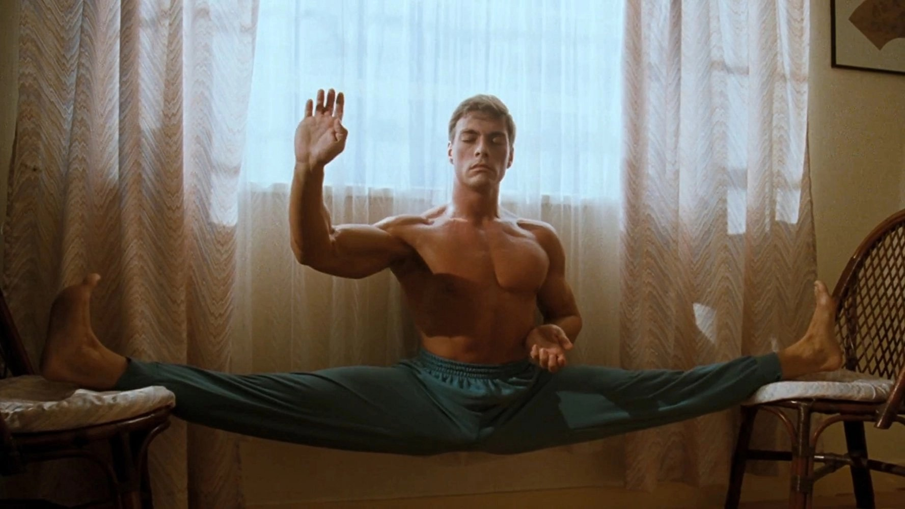
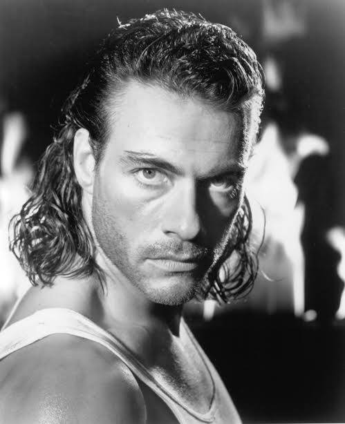

Sommaire5 sections
Il y a des acteurs qu'on découvre par un film. Et d'autres qu'on découvre par quelqu'un.
Pour moi, Jean-Claude Van Damme est arrivé par un ami de la famille. Mes parents avaient des amis dont le fils était fan, et c'est lui qui m'a fait découvrir Chasse à l'homme. Ce jour-là, je suis devenu fan à mon tour.
Puis il y a eu Bloodsport. Celui-là m'a particulièrement marqué. Frank Dux, le Kumite, ce tournoi clandestin d'arts martiaux à Hong Kong… et surtout ce coup de pied sauté en grand écart, qui reste pour moi sa signature mythique.
Un Belge né à Bruxelles, un corps de danseur et de karatéka, un surnom qu'il n'a jamais aimé : « les muscles de Bruxelles ».
Ce soir, SOMEDAY fait le portrait de Jean-Claude Van Damme.

Jean-Claude Van Damme
Avant Hollywood, il y a Bruxelles.
Jean-Claude Camille François Van Varenberg naît le 18 octobre 1960 près de Bruxelles. Enfant, il apprend le karaté, puis le kickboxing, la boxe thaïe et le taekwondo. Il ajoute la musculation, et plus tard la danse classique. Il décroche sa ceinture noire à 18 ans. Il combat en Belgique jusqu'en 1982, puis il arrête pour tenter sa chance au cinéma.
En 1982, il part pour Los Angeles avec un ami, Michel Qissi. Il change de nom : « Van Damme », emprunté à un ami. Il enchaîne les petits boulots, serveur, chauffeur de taxi, videur de boîte de nuit. Chuck Norris l'aide à décrocher ce dernier poste, et un petit rôle.
Les débuts sont modestes. Figurant dans Breakin' en 1984. Méchant russe dans No Retreat, No Surrender, en 1986. En 1987, on l'engage pour jouer la créature de Predator. Il porte le costume, puis il est remplacé.
Et puis il y a Bloodsport. Sorti le 26 février 1988 chez Cannon, réalisé par Newt Arnold. Il y joue Frank Dux, un capitaine de l'armée américaine qui déserte pour participer au Kumite, un tournoi clandestin d'arts martiaux à Hong Kong. C'est son premier grand rôle. Le film est tourné sur place, pour un budget de quelques millions de dollars à peine.
La critique est largement négative. Le public, lui, suit : le film rapporte des dizaines de millions de dollars dans le monde. Et en décembre 1988, la cassette sort chez Warner Home Video. Elle se vend à environ 150 000 exemplaires en quelques mois.
Le film était présenté comme une histoire vraie. Mais après sa sortie, l'un de ses scénaristes affirme que Frank Dux a inventé son palmarès, et jusqu'à l'existence du Kumite. Peu importe : un nouveau visage venait d'apparaître.
Après Bloodsport, Cannon lui propose trois films : Cyborg, Delta Force 2 ou American Ninja 3. Il choisit Cyborg. Il dira plus tard qu'il ne l'aimait pas beaucoup.
Le film sort en avril 1989. Moins de 500 000 dollars de budget, 23 jours de tournage en Caroline du Nord. Il naît des décors et des costumes d'un Masters of the Universe et d'un Spider-Man, abandonnés par Cannon, qui avait déjà dépensé 2 millions de dollars. Albert Pyun écrit le scénario en un week-end. Van Damme y joue un mercenaire dans une Amérique ravagée par une peste. La critique est mauvaise, le film rapporte plus de 10 millions de dollars.
Cinq mois plus tard, en septembre 1989, c'est Kickboxer. Kurt Sloane veut venger son frère, paralysé par Tong Po. Tourné en Thaïlande, pour 2,7 millions de dollars. Le film passe pour être l'un des premiers à avoir fait découvrir le muay-thaï au grand public.
En 1990, Death Warrant : un policier québécois infiltré dans une prison. Puis Lionheart, un légionnaire qui déserte et se bat dans des combats clandestins. Sorti en janvier 1991 aux États-Unis, c'est son premier vrai succès sur grand écran en Amérique du Nord. En France, il s'appelle Full Contact.
Août 1991 : Double Impact. Il y joue des jumeaux, il cosigne le scénario et il produit. Il veut changer son image, ne plus être seulement un homme de combat. Le film rapporte 80 millions de dollars aux États-Unis.
1992 : Universal Soldier. Roland Emmerich, 23 millions de dollars de budget, et face à lui, Dolph Lundgren, dont on a fait le portrait en saison 1. 120 millions de dollars dans le monde.
Août 1993 : Chasse à l'homme. John Woo tourne son premier film américain. Van Damme y est Chance Boudreaux, un solitaire de La Nouvelle-Orléans pris pour cible par des chasseurs d'hommes. Le film est d'abord classé NC-17. Woo doit couper une vingtaine de plans pour obtenir un R.
En quatre ans, les budgets sont passés de 500 000 dollars à plus de 20 millions. Et les cassettes, elles, étaient partout.

Jean-Claude Van Damme, le grand écart
En 1994, Timecop rapporte 44 millions de dollars aux États-Unis. C'est le plus gros succès de sa carrière en tête d'affiche. La même année, il joue dans Street Fighter, adaptation du jeu vidéo.
Puis quelque chose se casse. Après Timecop, un contrat de trois films lui échappe, après une demande de cachet. Il dira plus tard avoir été mis sur une « liste noire » à Hollywood. En 1999, il revient dans Universal Soldier : The Return, mais sa présence ne fait plus venir les foules. Pendant près de dix ans, la plupart de ses films sortent directement en DVD.
En 2008, le Belge Mabrouk El Mechri tourne JCVD. Van Damme y joue une version de lui-même : une star d'action en bout de course, qui rentre à Bruxelles et se retrouve pris, par erreur, pour l'auteur d'un braquage de bureau de poste.
Au cœur du film, une scène de six minutes, en un seul plan. Il regarde la caméra. Il parle de sa carrière, de ses mariages, de ses erreurs. Des acteurs comme Nicolas Cage ou Anna Kendrick ont salué ce moment. Le critique du magazine Time classe sa performance deuxième de l'année 2008, juste derrière le Joker de Heath Ledger.
Le film, lui, ne marche pas : environ 2,3 millions de dollars de recettes pour 12 millions de budget.
Mais il rouvre une porte. En 2012, Stallone lui trouve un rôle dans Expendables 2 : il y joue le méchant. Et il dira : « Grâce à Expendables 2, j'ai appris à aimer à nouveau le cinéma. »
Dans les années 90, on le regardait se battre. En 2008, il se raconte. Et c'est peut-être là que le cinéma lui a rendu justice.

Jean-Claude Van Damme
Jean-Claude Van Damme n'a pas fait que des grands films. Il en a fait beaucoup, de très inégaux, et la critique l'a rarement ménagé. Bloodsport, Cyborg, Kickboxer, Lionheart, Universal Soldier : presque tous ont été assez mal reçus à leur sortie.
Mais ils ont tenu. On les a vus et revus, sur cassette, en famille, entre amis.
Moi, je l'ai découvert chez des amis de mes parents, avec Chasse à l'homme. Puis Bloodsport m'a marqué, et ce coup de pied sauté en grand écart reste, pour moi, sa signature mythique. Je suis devenu fan, et je le suis resté.
SOMEDAY existe pour ça : pour les films qu'on a regardés sans toujours dire qu'on les aimait, et pour les hommes qu'on a réduits à une image.
Derrière le grand écart, il y avait un Belge arrivé à Los Angeles sans rien, qui a tout tenté, et qui a fini par se raconter lui-même face caméra.
La saison 3 de SOMEDAY se termine ici.
Et si vous aussi, vous avez découvert Van Damme sur une cassette, dites-le-moi par mail.
La cassette est dans le lecteur.
On rembobine.
SOMEDAY — S3 EP. 12